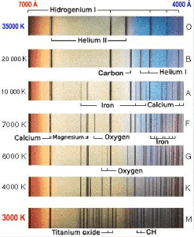
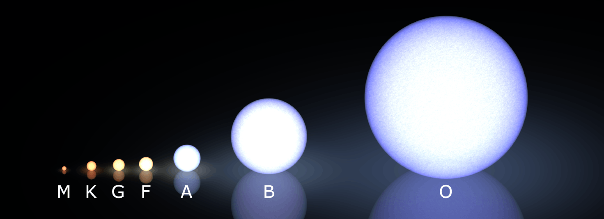

This classification is based on the cataloging of the absorption spectra of 225000 stars, in contrast to the intensity of the absorption lines, relative to the temperature of the star, being a temperature classification.

Stellar Classification
What's it based on

Absorption spectrum of each element.
How are stellar spectra generated
What are the classes
> The stellar spectra are continuous with absorption lines.
> The continuous spectrum is generated in the photosphere (visible star surface) and the absorption lines are generated in the thin atmosphere, which depend on the elements of the atmosphere and the temperature of the star.
> The color of a star depends on its temperature, as described in Wien's Law.
What are the classes
From the highest to the lowest temperature, the spectral classes are divided into: O, B, A, F, G, K, M. Each one has 10 subdivisions from 0 to 9, such as: A0, A1, A2 ...
> O - Blue stars, Effective temperatures = 20000 to 35000K. Examples: 10 Lac and Mintaka.
> B - Bluish-white stars, Effective temperatures = 15000K. Examples: Rigel and Spica.
> A - White stars, Effective temperatures = 9000K. Examples: Sirius and Vega.
> F - Yellowish-white stars, Effective temperatures = 7000K. Examples: Canopus and Procyon.
> G - Yellow stars, Effective temperatures = 5500K. Examples: The Sun and Capela.
> K - Orangish stars, Effective temperatures = 4000K. Examples: Aldebaran and Arcturus.
> M - Red stars, Effective temperatures = 3000K. Examples: Betelgeuse and Antares.

Classification by the absorption spectrum.